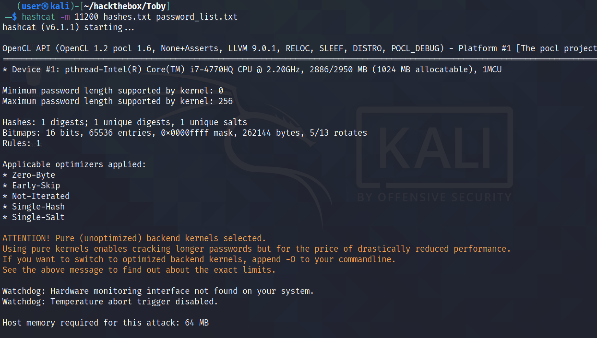

May 11, 2022
In this tutorial, we will see how to capture MariaDB/MySQL credentials and crack it to get the plain-text password. We will see how to run the MySQL service on the local box and have the target connect back to us so that we could capture the hashes and then crack it using hashcat.
It shows that the MySQL service is inactive.
Let's start the MySQL service.
It shows that the MySQL service is running.
First, we have to login to the MySQL instance running on the local box. Then, we have to create a user with which the remote server will be connecting to the MySQL service (which in this case is 'jack'). We have to specify the IP address of the remote server as well.
It triggers the target to connect to the MySQL service running on the local box.
However, we can see that when the target connects to the MySQL service, the local machine resets the connection.
It is because the local machine is listening on the localhost interface and remote servers can't connect to this interface.
Binding the address to "0.0.0.0" instead of "127.0.0.1" configures the MySQL service to run on all the interfaces on the local machine.
After changing the MySQL configuration, it is important to restart the service.
And now we can see that the MySQL service is running on all the interfaces.
Let's trigger the target server again to connect to the MySQL service.
Now, we can see that the TCP three way handshake is completed and a MySQL Greeting message is sent.
Note that two salts are also sent. The first salt is eight characters and the second salt is twelve characters.
It shows the password hash that is sent by the client to the MySQL server for authentication. The password is hashed by the two salts.
I have combined both salts and run it through xxd to create a hex dump.
It shows the format of the MySQL authentication hash that most cracking tools expect.
I have combined the salts with the password hash in the expected format.
Let's run the hashes through hashcat using a password list. And we can see that hashcat was able to successfully find the password.
If you liked reading this article, you can follow me on Twitter: mujtabareads.